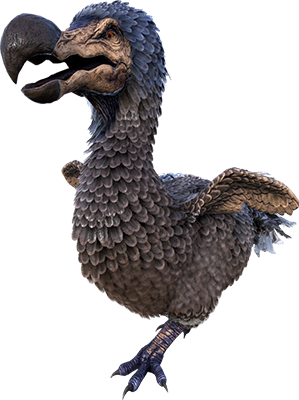

Desde el inofensivo Dodo hasta el imponente T-Rex. Aprender a domar, alimentar y criar a estas criaturas es fundamental para progresar, defender tu base y recolectar materiales rápidamente.
Guía de supervivencia, construcción y fauna prehistórica.
Despiertas en las playas de una isla misteriosa con un solo objetivo: sobrevivir.

Desde el inofensivo Dodo hasta el imponente T-Rex. Aprender a domar, alimentar y criar a estas criaturas es fundamental para progresar, defender tu base y recolectar materiales rápidamente.
El progreso de tus construcciones no tiene límite.
Empezarás fabricando lanzas de piedra y refugios de paja, pero subiendo de nivel y desbloqueando engramas, llegarás a construir torretas automáticas y armaduras avanzadas.